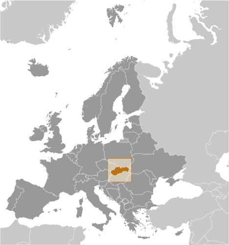
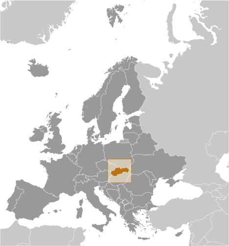

Europe :: SLOVAKIA
Introduction :: SLOVAKIA
-
Slovakia traces its roots to the 9th century state of Great Moravia. Subsequently, the Slovaks became part of the Hungarian Kingdom, where they remained for the next 1,000 years. Following the formation of the dual Austro-Hungarian monarchy in 1867, language and education policies favoring the use of Hungarian (Magyarization) resulted in a strengthening of Slovak nationalism and a cultivation of cultural ties with the closely related Czechs, who were under Austrian rule. After the dissolution of the Austro-Hungarian Empire at the close of World War I, the Slovaks joined the Czechs to form Czechoslovakia. During the interwar period, Slovak nationalist leaders pushed for autonomy within Czechoslovakia, and in 1939 Slovakia became an independent state allied with Nazi Germany. Following World War II, Czechoslovakia was reconstituted and came under communist rule within Soviet-dominated Eastern Europe. In 1968, an invasion by Warsaw Pact troops ended the efforts of the country's leaders to liberalize communist rule and create "socialism with a human face," ushering in a period of repression known as "normalization." The peaceful "Velvet Revolution" swept the Communist Party from power at the end of 1989 and inaugurated a return to democratic rule and a market economy. On 1 January 1993, the country underwent a nonviolent "velvet divorce" into its two national components, Slovakia and the Czech Republic. Slovakia joined both NATO and the EU in the spring of 2004 and the euro zone on 1 January 2009.
Geography :: SLOVAKIA
-
Central Europe, south of Poland48 40 N, 19 30 EEuropetotal: 49,035 sq kmland: 48,105 sq kmwater: 930 sq kmcountry comparison to the world: 131about one and a half times the size of Maryland; about twice the size of New Hampshiretotal: 1,611 kmborder countries (5): Austria 105 km, Czech Republic 241 km, Hungary 627 km, Poland 541 km, Ukraine 97 km0 km (landlocked)none (landlocked)temperate; cool summers; cold, cloudy, humid wintersrugged mountains in the central and northern part and lowlands in the southmean elevation: 458 melevation extremes: lowest point: Bodrok River 94 mhighest point: Gerlachovsky Stit 2,655 mlignite, small amounts of iron ore, copper and manganese ore; salt; arable landagricultural land: 40.1%arable land 28.9%; permanent crops 0.4%; permanent pasture 10.8%forest: 40.2%other: 19.7% (2011 est.)869 sq km (2012)a fairly even distribution throughout most of the country; slightly larger concentration in the west in proximity to the Czech borderfloodingair pollution from metallurgical plants presents human health risks; acid rain damaging forestsparty to: Air Pollution, Air Pollution-Nitrogen Oxides, Air Pollution-Persistent Organic Pollutants, Air Pollution-Sulfur 85, Air Pollution-Sulfur 94, Air Pollution-Volatile Organic Compounds, Antarctic Treaty, Biodiversity, Climate Change, Climate Change-Kyoto Protocol, Desertification, Endangered Species, Environmental Modification, Hazardous Wastes, Law of the Sea, Ozone Layer Protection, Ship Pollution, Wetlands, Whalingsigned, but not ratified: none of the selected agreementslandlocked; most of the country is rugged and mountainous; the Tatra Mountains in the north are interspersed with many scenic lakes and valleys
People and Society :: SLOVAKIA
-
5,445,829 (July 2017 est.)country comparison to the world: 118noun: Slovak(s)adjective: SlovakSlovak 80.7%, Hungarian 8.5%, Romani 2%, other and unspecified 8.8% (2011 est.)note: Romani populations are usually underestimated in official statistics and may represent 7–11% of Slovakia's populationSlovak (official) 78.6%, Hungarian 9.4%, Roma 2.3%, Ruthenian 1%, other or unspecified 8.8% (2011 est.)Roman Catholic 62%, Protestant 8.2%, Greek Catholic 3.8%, other or unspecified 12.5%, none 13.4% (2011 est.)0-14 years: 15.17% (male 424,039/female 402,284)15-24 years: 10.87% (male 305,058/female 286,902)25-54 years: 45.1% (male 1,240,943/female 1,215,260)55-64 years: 13.42% (male 347,221/female 383,852)65 years and over: 15.43% (male 325,738/female 514,532) (2017 est.)total dependency ratio: 41.5youth dependency ratio: 21.6elderly dependency ratio: 26.8potential support ratio: 3.7 (2015 est.)total: 40.5 yearsmale: 38.8 yearsfemale: 42.3 years (2017 est.)country comparison to the world: 49-0.01% (2017 est.)country comparison to the world: 1979.7 births/1,000 population (2017 est.)country comparison to the world: 1979.9 deaths/1,000 population (2017 est.)country comparison to the world: 410.1 migrant(s)/1,000 population (2017 est.)country comparison to the world: 70a fairly even distribution throughout most of the country; slightly larger concentration in the west in proximity to the Czech borderurban population: 53.4% of total population (2017)rate of urbanization: -0.09% annual rate of change (2015-20 est.)BRATISLAVA (capital) 401,000 (2015)at birth: 1.07 male(s)/female0-14 years: 1.05 male(s)/female15-24 years: 1.06 male(s)/female25-54 years: 1.02 male(s)/female55-64 years: 0.9 male(s)/female65 years and over: 0.62 male(s)/femaletotal population: 0.94 male(s)/female (2016 est.)27.6 years (2014 est.)6 deaths/100,000 live births (2015 est.)country comparison to the world: 167total: 5.1 deaths/1,000 live birthsmale: 5.7 deaths/1,000 live birthsfemale: 4.5 deaths/1,000 live births (2017 est.)country comparison to the world: 176total population: 77.3 yearsmale: 73.7 yearsfemale: 81.1 years (2017 est.)country comparison to the world: 751.41 children born/woman (2017 est.)country comparison to the world: 2108.1% of GDP (2014)country comparison to the world: 543.39 physicians/1,000 population (2013)6 beds/1,000 population (2011)improved:urban: 100% of populationrural: 100% of populationtotal: 100% of populationunimproved:urban: 0% of populationrural: 0% of populationtotal: 0% of population (2015 est.)improved:urban: 99.4% of populationrural: 98.2% of populationtotal: 98.8% of populationunimproved:urban: 0.6% of populationrural: 1.8% of populationtotal: 1.2% of population (2015 est.)<.1% (2016 est.)<1000 (2016 est.)<100 (2016 est.)20.5% (2016)country comparison to the world: 984.1% of GDP (2013)country comparison to the world: 103total: 15 yearsmale: 14 yearsfemale: 16 years (2014)total: 26.5%male: 25.8%female: 27.5% (2015 est.)country comparison to the world: 21
Government :: SLOVAKIA
-
conventional long form: Slovak Republicconventional short form: Slovakialocal long form: Slovenska republikalocal short form: Slovenskoetymology: related to the Slavic autonym (self-designation) "Slovenin," a derivation from "slovo" (word), denoting "people who speak (the same language)" (i.e., people who understand each other)parliamentary republicname: Bratislavageographic coordinates: 48 09 N, 17 07 Etime difference: UTC+1 (6 hours ahead of Washington, DC, during Standard Time)daylight saving time: +1hr, begins last Sunday in March; ends last Sunday in October8 regions (kraje, singular - kraj); Banskobystricky, Bratislavsky, Kosicky, Nitriansky, Presovsky, Trenciansky, Trnavsky, Zilinsky1 January 1993 (Czechoslovakia split into the Czech Republic and Slovakia)Constitution Day, 1 September (1992)history: several previous (preindependence); latest passed by the National Council 1 September 1992, signed 3 September 1992, effective 1 October 1992amendments: proposed by the National Council; passage requires at least three-fifths majority vote of Council members; amended many times, last in 2017 (2017)civil law system based on Austro-Hungarian codes; note - legal code modified to comply with the obligations of Organization on Security and Cooperation in Europeaccepts compulsory ICJ jurisdiction with reservations; accepts ICCt jurisdictioncitizenship by birth: nocitizenship by descent only: at least one parent must be a citizen of Slovakiadual citizenship recognized: noresidency requirement for naturalization: 5 years18 years of age; universalchief of state: President Andrej KISKA (since 15 June 2014)head of government: Prime Minister Robert FICO (since 4 April 2012); Deputy Prime Ministers Robert KALINAK (since 4 April 2012), Lucia ZITNANSKA and Peter PELLEGRINI (since 23 March 2016)cabinet: Cabinet appointed by the president on the recommendation of the prime ministerelections/appointments: president directly elected by absolute majority popular vote in 2 rounds if needed for a 5-year term (eligible for a second term); election last held on 15 and 29 March 2014 (next to be held in March 2019); following National Council elections, the leader of the majority party or majority coalition usually appointed prime minister by the presidentelection results: Andrej KISKA elected president; percent of vote in second round - Andrej KISKA (independent) 59.4%, Robert FICO (Smer-SD) 40.6%description: unicameral National Council or Narodna Rada (150 seats; members directly elected in a single national constituency by proportional representation vote; members serve 4-year terms)elections: last held on 5 March 2016 (next to be held in March 2020)election results: percent of vote by party - Smer-SD 28.3%, SaS 12.1%, OLaNO-NOVA 11%, SNS 8.6%, LSNS 8%, Sme-Rodina 6.6%, Most-Hid 6.5%, Siet 5.6%, other 13.3%; seats by party - Smer-SD 49, SaS 21, OLaNO-NOVA 19, SNS 15, LSNS 14, Sme-Rodina 11, Most-Hid 11, Siet 10highest court(s): Supreme Court of the Slovak Republic (consists of the court president, vice president, and 79 judges organized into criminal, civil, commercial, and administrative divisions with 3- and 5-judge panels); Constitutional Court (consists of 13 judges)judge selection and term of office: Supreme Court judge candidates proposed by the Judicial Council of the Slovak Republic, an 18-member independent body to include the Supreme Court chief justice and presidential, governmental, parliamentary, and judiciary appointees; judges appointed by the president for life with mandatory retirement at age 65; Constitutional Court judges nominated by the National Council of the Republic and appointed by the president; judges appointed for 12-year termssubordinate courts: regional and district civil courts; Higher Military Court; military district courts; Court of AuditChristian Democratic Movement or KDH [Alojz HLINA]Bridge or Most-Hid [Bela BUGAR]Direction-Social Democracy or Smer-SD [Robert FICO]Freedom and Solidarity or SaS [Richard SULIK]Kotleba-People's Party Our Slovakia or LSNS [Marian KOTLEBA]Network or Siet [Marek CEPKO, acting]Ordinary People and Independent Personalities - New Majority or OLaNO-NOVA [Igor MATOVIC]Party of the Hungarian Coalition or SMK [Jozsef MENYHART]Slovak National Party or SNS [Andrej DANKO]We Are Family or Sme-Rodina [Boris KOLLAR]Alliance of Companies Employing 500 or More Employees or Klub500Association of Towns and Villages or ZMOSConfederation of Trade Unions or KOZEntrepreneurs Association of Slovakia or ZPSFederation of Employers' Associations of the Slovak Republic or AZZZMedical Trade Association or LOZNational Union of Employers or RUZSlovak Chamber of Commerce and Industry or SOPKThe Business Alliance of Slovakia or PASAustralia Group, BIS, BSEC (observer), CBSS (observer), CD, CE, CEI, CERN, EAPC, EBRD, ECB, EIB, EMU, EU, FAO, IAEA, IBRD, ICAO, ICC (national committees), ICRM, IDA, IEA, IFC, IFRCS, ILO, IMF, IMO, IMSO, Interpol, IOC, IOM, IPU, ISO, ITU, ITUC (NGOs), MIGA, NATO, NEA, NSG, OAS (observer), OECD, OIF (observer), OPCW, OSCE, PCA, Schengen Convention, SELEC (observer), UN, UNCTAD, UNESCO, UNFICYP, UNIDO, UNTSO, UNWTO, UPU, WCO, WFTU (NGOs), WHO, WIPO, WMO, WTO, ZCchief of mission: Ambassador Peter KMEC (since 19 September 2012)chancery: 3523 International Court NW, Washington, DC 20008telephone: [1] (202) 237-1054FAX: [1] (202) 237-6438consulate(s) general: Los Angeles, New Yorkchief of mission: Ambassador Adam H. Sterling (since August 2016)embassy: Hviezdoslavovo Namestie 4, 81102 Bratislavamailing address: P.O. Box 309, 814 99 Bratislavatelephone: [421] (2) 5443-3338FAX: [421] (2) 5441-8861three equal horizontal bands of white (top), blue, and red derive from the Pan-Slav colors; the Slovakian coat of arms (consisting of a red shield bordered in white and bearing a white double-barred cross of St. Cyril and St. Methodius surmounting three blue hills) is centered over the bands but offset slightly to the hoist sidenote: the Pan-Slav colors were inspired by the 19th-century flag of Russiadouble-barred cross (Cross of St. Cyril and St. Methodius) surmounting three peaks; national colors: white, blue, redname: "Nad Tatrou sa blyska" (Lightning Over the Tatras)lyrics/music: Janko MATUSKA/traditionalnote: adopted 1993, in use since 1844; music based on the Slovak folk song "Kopala studienku"
Economy :: SLOVAKIA
-
Slovakia’s economy suffered from a slow start in the first years after its separation from the Czech Republic in 1993, due to the country’s authoritarian leadership and high levels of corruption, but economic reforms implemented after 1998 have placed Slovakia on a path of strong growth. With a population of 5.4 million, the Slovak Republic has a small, open economy driven mainly by automobile and electronics exports, which account for more than 80% of GDP. Slovakia joined the EU in 2004 and the euro zone in 2009. The country’s banking sector is sound and predominantly foreign owned.Slovakia has been a regional FDI champion for several years, attractive due to a relatively low-cost yet skilled labor force, and a favorable geographic location in the heart of Central Europe. Among the most pressing domestic issues potentially threatening the attractiveness of the Slovak market are shortages in qualified labor force, persistent corruption issues, and an inadequate judiciary, as well as a lack of innovation. The energy sector in particular is characterized by unpredictable regulatory oversight and high costs, in part driven by government interference in regulated tariffs.$170 billion (2016 est.)$162.5 billion (2015 est.)$154.9 billion (2014 est.)note: data are in 2016 dollarscountry comparison to the world: 72$89.53 billion (2016 est.)3.3% (2016 est.)3.8% (2015 est.)2.6% (2014 est.)country comparison to the world: 87$31,300 (2016 est.)$30,400 (2015 est.)$29,300 (2014 est.)note: data are in 2016 dollarscountry comparison to the world: 6020.8% of GDP (2016 est.)23.4% of GDP (2015 est.)22.8% of GDP (2014 est.)country comparison to the world: 84household consumption: 54.7%government consumption: 19.5%investment in fixed capital: 20.2%investment in inventories: 1.9%exports of goods and services: 93.8%imports of goods and services: -90.1% (2016 est.)agriculture: 3.8%industry: 34.8%services: 61.4% (2016 est.)grains, potatoes, sugar beets, hops, fruit; pigs, cattle, poultry; forest productsautomobiles; metal and metal products; electricity, gas, coke, oil, nuclear fuel; chemicals, synthetic fibers, wood and paper products; machinery; earthenware and ceramics; textiles; electrical and optical apparatus; rubber products; food and beverages; pharmaceutical5.2% (2016 est.)country comparison to the world: 472.759 million (2016 est.)country comparison to the world: 110agriculture: 3.9%industry: 22.7%services: 73.4% (2016)9.6% (2016 est.)11.5% (2015 est.)country comparison to the world: 12512.3% (2015 est.)lowest 10%: 3.3%highest 10%: 19.3% (2015 est.)23.7 (2015)26.1 (2014)country comparison to the world: 148revenues: $35.79 billionexpenditures: $37.3 billion (2016 est.)40% of GDP (2016 est.)country comparison to the world: 40-1.7% of GDP (2016 est.)country comparison to the world: 8051.9% of GDP (2016 est.)52.5% of GDP (2015 est.)note: data cover general Government Gross Debt, and includes debt instruments issued (or owned) by Government entities, including sub-sectors of central government, state government, local government, and social security fundscountry comparison to the world: 95calendar year-0.5% (2016 est.)-0.3% (2015 est.)country comparison to the world: 300% (31 December 2016 est.)0.05% (31 December 2015 est.)note: this is the European Central Bank's rate on the marginal lending facility, which offers overnight credit to banks from the euro area; Slovakia became a member of the Economic and Monetary Union (EMU) on 1 January 2009country comparison to the world: 1532.55% (31 December 2016 est.)2.78% (31 December 2015 est.)country comparison to the world: 174$45.63 billion (31 December 2016 est.)$43 billion (31 December 2015 est.)note: see entry for the European Union for money supply for the entire euro area; the European Central Bank (ECB) controls monetary policy for the 18 members of the Economic and Monetary Union (EMU); individual members of the EMU do not control the quantity of money circulating within their own borderscountry comparison to the world: 53$59.48 billion (31 December 2016 est.)$58.41 billion (31 December 2015 est.)country comparison to the world: 64$70.84 billion (31 December 2016 est.)$67.71 billion (31 December 2015 est.)country comparison to the world: 59$4.492 billion (30 November 2016 est.)$4.634 billion (31 December 2015 est.)$4.732 billion (31 December 2014 est.)country comparison to the world: 90$-653 million (2016 est.)$145.2 million (2015 est.)country comparison to the world: 108$75.53 billion (2016 est.)$73.33 billion (2015 est.)country comparison to the world: 39vehicles and related parts 27%, machinery and electrical equipment 20%, nuclear reactors and furnaces 12%, iron and steel 4%, mineral oils and fuels 5% (2015 est.)Germany 21.9%, Czech Republic 11.9%, Poland 7.7%, France 6.1%, UK 5.9%, Austria 5.7%, Hungary 5.7%, Italy 4.8% (2016)$73.01 billion (2016 est.)$71.1 billion (2015 est.)country comparison to the world: 40machinery and electrical equipment 20%, vehicles and related parts 14%, nuclear reactors and furnaces 12%, fuel and mineral oils 9% (2015 est.)Germany 20.2%, Czech Republic 16.9%, Austria 9.8%, Poland 6.5%, Hungary 6.1%, South Korea 4.7%, China 4.6%, France 4.4% (2016)$2.892 billion (31 December 2016 est.)$2.892 billion (31 December 2015 est.)country comparison to the world: 108$75.04 billion (31 March 2016 est.)$74.19 billion (31 March 2015 est.)country comparison to the world: 56$54.03 billion (31 December 2016 est.)$51.83 billion (31 December 2015 est.)country comparison to the world: 56$15.06 billion (31 December 2016 est.)$10.52 billion (31 December 2015 est.)country comparison to the world: 59euros (EUR) per US dollar -0.9214 (2016 est.)0.885 (2015 est.)0.885 (2014 est.)0.7634 (2013 est.)0.7752 (2012 est.)
Energy :: SLOVAKIA
-
electrification - total population: 100% (2016)24.85 billion kWh (2015 est.)country comparison to the world: 7225.87 billion kWh (2015 est.)country comparison to the world: 6710.6 billion kWh (2016 est.)country comparison to the world: 2113.25 billion kWh (2016 est.)country comparison to the world: 207.11 million kW (2015 est.)country comparison to the world: 7335.1% of total installed capacity (2015 est.)country comparison to the world: 17725.5% of total installed capacity (2015 est.)country comparison to the world: 414.9% of total installed capacity (2015 est.)country comparison to the world: 10111.8% of total installed capacity (2015 est.)country comparison to the world: 63200 bbl/day (2016 est.)country comparison to the world: 96129.7 bbl/day (2016 est.)country comparison to the world: 81115,600 bbl/day (2016 est.)country comparison to the world: 429 million bbl (1 January 2017 es)country comparison to the world: 94137,400 bbl/day (2016 est.)country comparison to the world: 6284,290 bbl/day (2016 est.)country comparison to the world: 8883,030 bbl/day (2016 est.)country comparison to the world: 4636,470 bbl/day (2016 est.)country comparison to the world: 9594 million cu m (2015 est.)country comparison to the world: 817.868 billion cu m (2015 est.)country comparison to the world: 593 million cu m (2014 est.)country comparison to the world: 544.407 billion cu m (2015 est.)country comparison to the world: 3514.16 billion cu m (1 January 2017 es)country comparison to the world: 8031.1 million Mt (2015 est.)country comparison to the world: 76
Communications :: SLOVAKIA
-
total subscriptions: 823,594subscriptions per 100 inhabitants: 15 (July 2016 est.)country comparison to the world: 80total: 6,989,902subscriptions per 100 inhabitants: 128 (July 2016 est.)country comparison to the world: 108general assessment: a modern telecommunications system that has expanded dramatically in recent years with the growth of cellular servicesdomestic: Slovak Telecom maintains a near monopoly on fixed-line service; four companies provide nationwide cellular servicesinternational: country code - 421; 3 international exchanges (1 in Bratislava and 2 in Banska Bystrica) are available; Slovakia is participating in several international telecommunications projects that will increase the availability of external services (2017)state-owned public broadcaster, Radio and Television of Slovakia (RTVS), operates 2 national TV stations and multiple national and regional radio networks; roughly 50 privately owned TV stations operating nationally, regionally, and locally; about 40% of households are connected to multi-channel cable or satellite TV; 32 privately owned radio stations (2016).sktotal: 4,382,558percent of population: 80.5% (July 2016 est.)country comparison to the world: 72
Transportation :: SLOVAKIA
-
number of registered air carriers: 4inventory of registered aircraft operated by air carriers: 23annual passenger traffic on registered air carriers: 11,100annual freight traffic on registered air carriers: 0 mt-km (2015)OM (2016)35 (2013)country comparison to the world: 111total: 21over 3,047 m: 22,438 to 3,047 m: 21,524 to 2,437 m: 3914 to 1,523 m: 3under 914 m: 11 (2013)total: 14914 to 1,523 m: 9under 914 m: 5 (2013)1 (2013)gas transmission pipelines 2,270 km; high-pressure gas distribution pipelines 6,278 km; mid- and low-pressure gas distribution pipelines 27,023 km (2016); oil 510 km (2015)total: 3,626 kmbroad gauge: 99 km 1.520-m gaugestandard gauge: 3,477 km 1.435-m gauge (1,587 km electrified)narrow gauge: 50 km 1.000-m or 0.750-m gauge (2016)country comparison to the world: 49total: 54,869 km (includes local roads, national roads, and 420 km of highways) (2012)country comparison to the world: 75172 km (on Danube River) (2012)country comparison to the world: 99total: 11by type: cargo 9, refrigerated cargo 2foreign-owned: 11 (Germany 3, Ireland 1, Italy 2, Montenegro 1, Slovenia 1, Turkey 1, Ukraine 2) (2010)country comparison to the world: 112river port(s): Bratislava, Komarno (Danube)
Military and Security :: SLOVAKIA
-
1.16% of GDP (2016)1.15% of GDP (2015)1.01% of GDP (2014)1% of GDP (2013)1.2% of GDP (2012)country comparison to the world: 89Armed Forces of the Slovak Republic (Ozbrojene Sily Slovenskej Republiky): Land Forces (Pozemne Sily), Air Forces (Vzdusne Sily) (2010)18-30 years of age for voluntary military service; conscription in peacetime suspended in 2006; women are eligible to serve (2012)
Transnational Issues :: SLOVAKIA
-
bilateral government, legal, technical and economic working group negotiations continued between Slovakia and Hungary over Hungary's completion of its portion of the Gabcikovo-Nagymaros hydroelectric dam project along the Danube; as a member state that forms part of the EU's external border, Slovakia has implemented strict Schengen border rulesstateless persons: 1,523 (2016)transshipment point for Southwest Asian heroin bound for Western Europe; producer of synthetic drugs for regional market; consumer of ecstasy